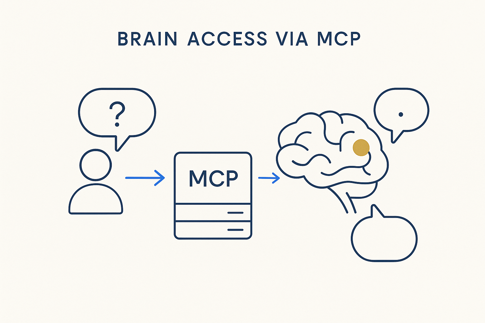

Expose the company brain through MCP servers so users and other systems can ask it questions and get grounded answers — the brain becomes something you talk to.

> Expose the company brain through MCP servers so users and other systems can ask it questions and get grounded answers — the brain becomes something you talk to.
A company brain is only as valuable as it is reachable. Brain-access-via-MCP is the interface layer: MCP servers that sit on top of the structured metadata and let users — and other systems, and other AI tools — ask questions and get grounded answers fast. A business user types a plain question; an auditor asks for evidence; a downstream system requests a definition — and each gets an answer backed by the real structure, not a hallucination, because the MCP server queries the metadata mirror rather than guessing.
This is what turns the brain from a store into a conversation. Because the knowledge is structured and versioned, the MCP layer can answer with provenance (“here’s the answer, and here’s the source”) and stay current as the metadata changes. And because MCP is a standard, the same brain is reachable by the whole ecosystem of tools without building a custom integration for each.
It’s the delivery end of the pipeline and the practical form of the company brain: systems talking to systems in metadata, with humans able to join the conversation in plain language. Structure it once; let everyone and everything ask.
Where it lives: the method layer of Breakthrough Modeling — the brain, made askable through MCP.